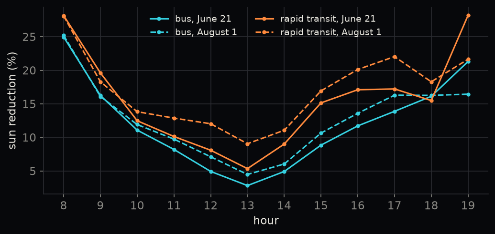
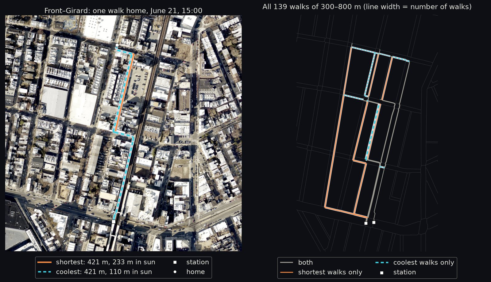
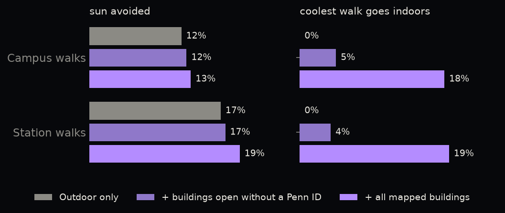

Results
How much sun a walk home can avoid, where, and what buildings add.
All numbers are for 15:00 (June 21 and August 1 pooled) with the dynamic θ, unless stated.
How much sun can a walk home avoid?
66%
of the shortest walk is sunny (rapid transit, 300–800 m)
−16%
sun on the coolest walk
+0.64%
extra distance
50%
of walks have no cooler option
| Mode | Walk | Walks | Sun on shortest | Sun ↓ | Detour (mean / 95th pct.) | Exposure ↓ | No cooler option |
|---|---|---|---|---|---|---|---|
| Bus | <300 m | 185,224 | 75% | 4.0% | 0.2% / 0.9% | 0.48% | 87% |
| Bus | 300–800 m | 135,384 | 74% | 9.7% | 0.4% / 3.0% | 1.08% | 61% |
| Bus | 800–1200 m | 33,147 | 75% | 9.7% | 0.5% / 2.3% | 1.41% | 51% |
| Rapid | <300 m | 17,074 | 62% | 6.1% | 0.2% / 1.5% | 0.73% | 83% |
| Rapid | 300–800 m | 45,388 | 66% | 16.0% | 0.6% / 3.5% | 1.90% | 50% |
| Rapid | 800–1200 m | 14,883 | 68% | 16.0% | 0.5% / 2.2% | 2.66% | 45% |
Rapid = rapid-transit stations; Bus = high-frequency bus stops. Sun ↓ = sun reduction of the coolest walk; Exposure ↓ = weighted exposure reduction.
The coolest walk is rarely more than a few percent longer. Mean detours stay below 1% in every group, and 95% of coolest walks are at most 0.9%–3.5% longer than the shortest walk, depending on the group.
Rapid-transit walks gain more than bus walks of the same length: stations sit in denser, taller parts of the city where a parallel street in building shade is usually available.
Short walks have no choice. Under 300 m, more than four in five walks have no cooler option.
Weighted exposure falls much less than sun. With θ near 0.2, a metre moved from sun into shade lowers the cost by only 0.2 m; the remaining heat burden of shaded walking is still counted.
Morning and evening, when shadows are long, offer the most; around 13:00 the sun is high and little shade is left to choose.
Where can walkers find shade?
Walks home from frequent bus stops are summarised on a 500 m grid by where people live, and the cells are grouped into three types by how sunny their 300–800 m walks are and how much of that sun can be avoided. Cells vary gradually, so the types are a convenient summary rather than sharp classes.
| Cluster | Cells | Sun on shortest | Sun reduction | No cooler option | Building height (m) | Canopy | Sidewalk km/km² |
|---|---|---|---|---|---|---|---|
| Sunny, no cooler option | 269 | 83% | 2.5% | 80% | 7.4 | 9% | 31 |
| Sunny but avoidable | 92 | 67% | 25.0% | 26% | 8.6 | 7% | 41 |
| Cooler, few alternatives | 149 | 61% | 5.6% | 70% | 8.1 | 11% | 32 |
Across cells, sidewalk density is the strongest correlate of being able to avoid the sun (Spearman ρ = 0.44 with sun reduction), while building height mostly sets how sunny the walk is to begin with (ρ = −0.47 with sun share). Leafy areas start cooler but, with sparser streets, rarely offer an alternative. Explore the cells on the city map.
Rapid-transit stations
Stations ranked by sun reduction for walks of 300–800 m, the six largest and four smallest. Only the 65 stations with at least 50 such walks are ranked; 6 with fewer walks are shown as hollow circles on the city map.
| Station | Line | Walks | Sun on shortest | Sun ↓ | No cooler option |
|---|---|---|---|---|---|
| Broad–Spring Garden | B (Broad Street) | 297 | 59% | 58.7% | 0% |
| Front–Girard | L (Market-Frankford) | 139 | 61% | 53.4% | 20% |
| Huntingdon | L (Market-Frankford) | 1,658 | 68% | 40.4% | 20% |
| Wyndmoor | Regional Rail | 51 | 62% | 37.7% | 0% |
| Tasker–Morris | B (Broad Street) | 3,190 | 65% | 31.8% | 12% |
| Ellsworth–Federal | B (Broad Street) | 3,081 | 57% | 31.1% | 28% |
| Forest Hills | Regional Rail | 355 | 78% | 0.0% | 100% |
| Chestnut Hill East | Regional Rail | 53 | 27% | 0.0% | 100% |
| Walnut–Locust | B (Broad Street) | 206 | 19% | 0.0% | 100% |
| NRG Station | B (Broad Street) | 125 | 67% | −0.1% | 100% |
At Front–Girard and Huntingdon (L) the coolest walk follows the elevated L on the side its shadow falls; at Broad–Spring Garden (B) it simply crosses to the shaded side of the street; at Wyndmoor (Regional Rail) it follows tree-lined streets.

Through buildings (University City)
| Sample | Scenario | Walks | Coolest uses indoors | Sun ↓* | Exposure ↓* | Length* |
|---|---|---|---|---|---|---|
| Campus | Outdoor only | 3,000 | 0% | 11.6% | 1.4% | +0.76% |
| Campus | + no-PennCard buildings | 3,000 | 5% | 12.2% | 1.7% | +0.64% |
| Campus | + all annotated buildings | 3,000 | 18% | 12.8% | 2.1% | +0.71% |
| Station | Outdoor only | 5,202 | 0% | 16.5% | 1.7% | +0.98% |
| Station | + no-PennCard buildings | 5,202 | 4% | 17.1% | 2.0% | +0.87% |
| Station | + all annotated buildings | 5,202 | 19% | 18.9% | 2.6% | +0.74% |
Campus = building to building; Station = rapid-transit station to building. * compared with the shortest walk on the outdoor-only network.
Opening the annotated buildings puts about one in five coolest walks indoors and removes another 1.2–2.4 points of sun, without making walks longer. The Indoor Contribution Index stays close to zero (median below 0.001 in absolute value): indoor passages here offer an equally long but cooler option, not a shortcut. This differs from the Dubai stations of Wen et al. (2025), where indoor networks through malls and connected towers make indoor routes real shortcuts. With θ near 0.2–0.3 for most of a 300–1,200 m walk, an indoor metre beats building shade by only about 0.1 m of cost, so indoor routes are chosen mainly when they are already on the way; walks of 800–1,200 m use them about three times as often as walks of 300–800 m.

Limitations
- Outside University City, campus and park walkways are missing, so cooler options there are understated.
- “No cooler option” mixes two cases: no cooler street exists, or one exists but is not worth the detour at the default shade preference.
- Shadows are for clear-sky June 21 and August 1; trees from leaf-off LiDAR and 2018 land cover; buildings from 2022.
- Indoor passages assume buildings are open and air-conditioned; opening hours and security are not modelled.